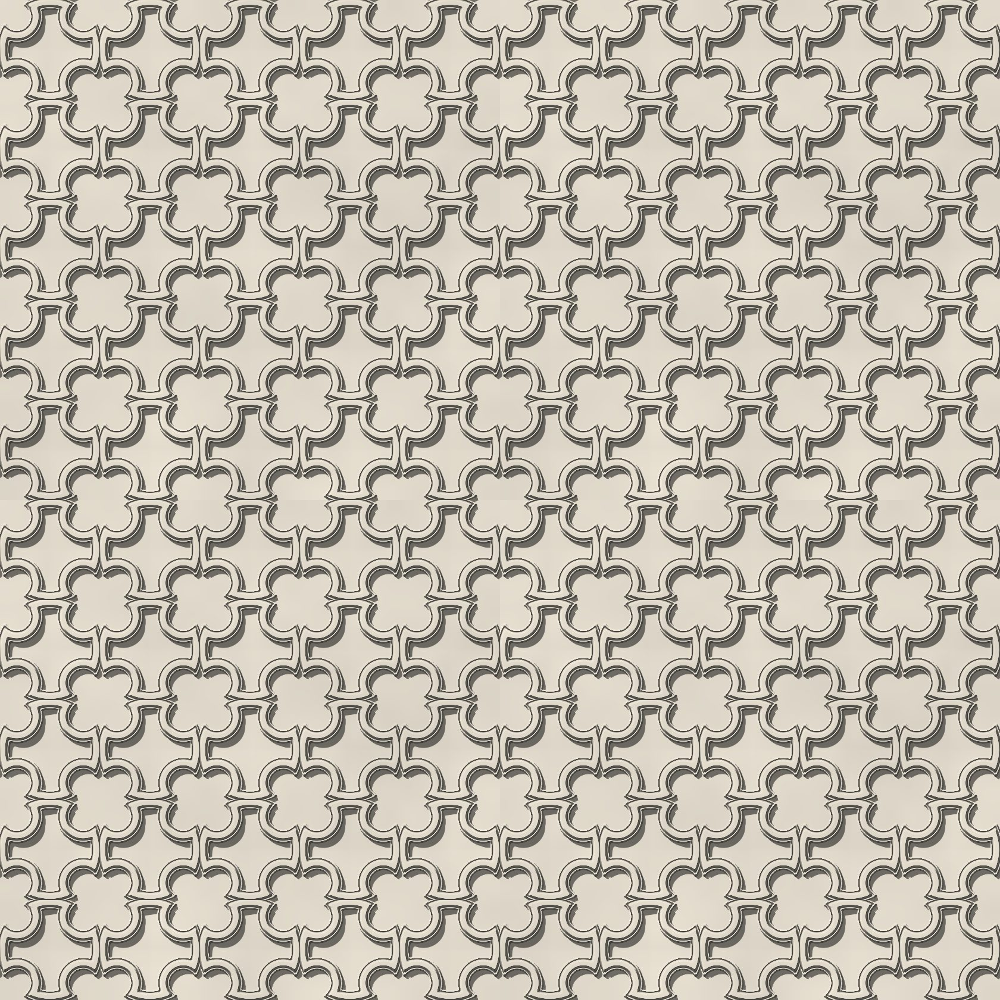
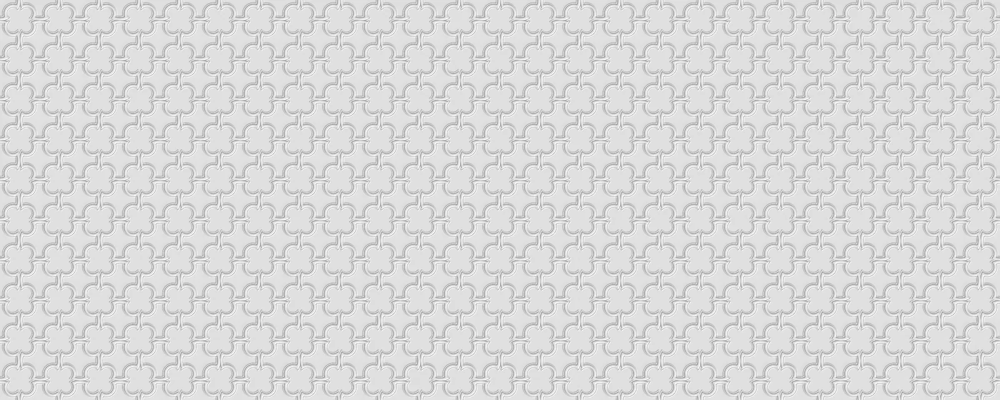
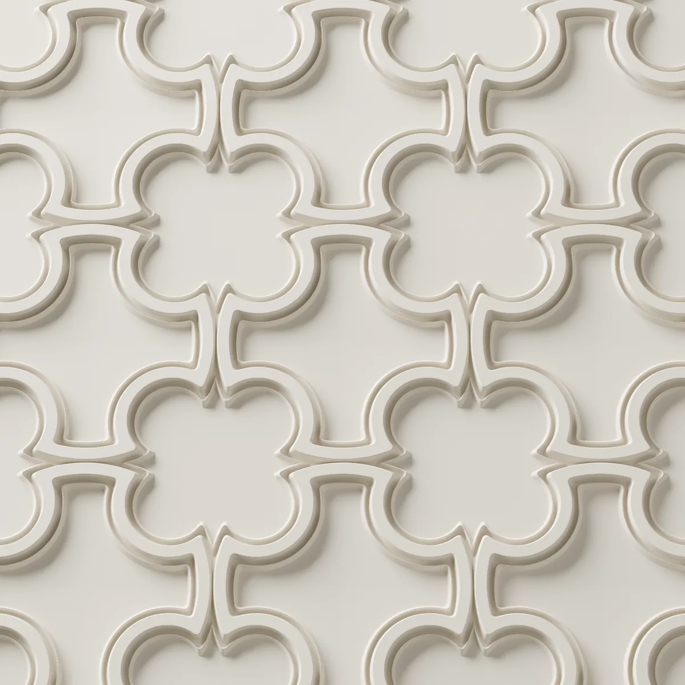
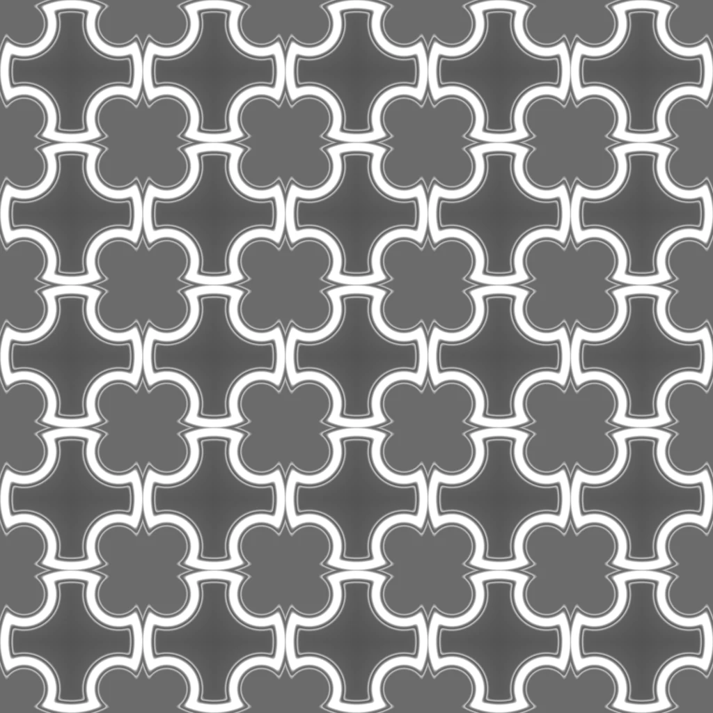
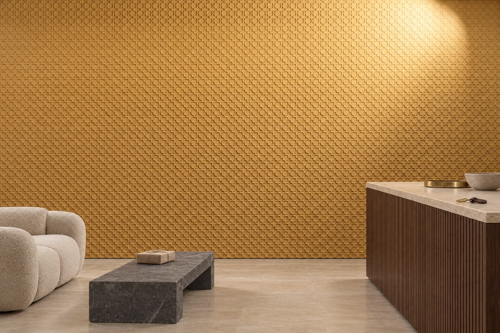
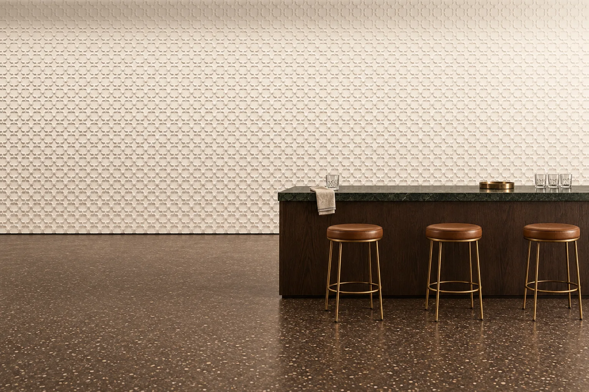
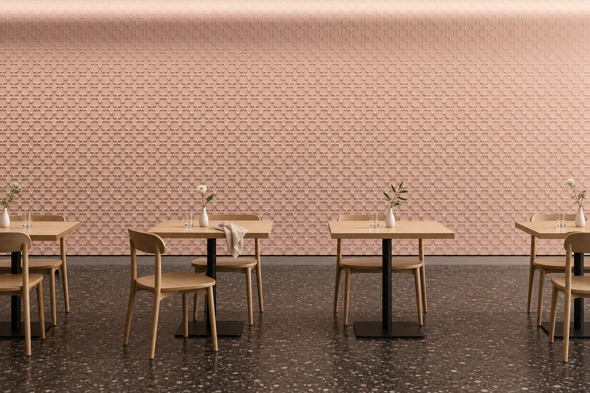
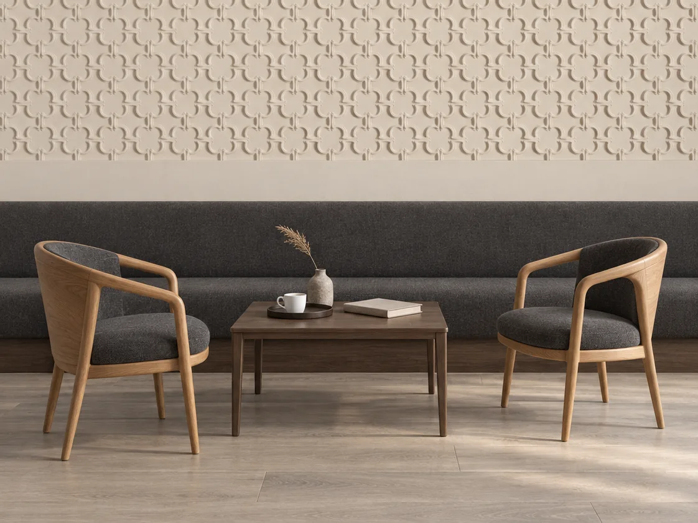

Ricercar
A lattice built from the Gothic quatrefoil. The pattern repeats every 600 mm, and the lattice carries on across the wall as panels are laid side by side.




- Size
- 600 × 600 mm
- Relief
- 6 mm
- Layout
- Repeating field, every 600 mm
- Material
- Lumina PMAG™ (polymer-modified composite gypsum)
- Surface
- Paint-ready, or with an artisan finish
- Fixing
- Polymer adhesive
- Lead time
- 4 weeks after contract and advance (up to 50 m²), ex-works Sapanca (EXW)
- Minimum order
- 5 m²
The pattern
Ricercar builds a lattice from the quatrefoil of Gothic architecture. The motif does not stop at the edge of a panel: it repeats every 600 mm, and the lattice carries on across the wall as panels are laid side by side. This is the design of a wall surface, not of a single panel.
The relief is 6 mm deep, which is shallow. That shallowness keeps the lines of the lattice soft and regular; the pattern reads as a fine network of lines rather than as a heavy mass.
How it reads in light
On the image at the top of the page the light follows your cursor on a computer and moves as you scroll on a phone. When the light comes from the side, the edges of the quatrefoils and the lines of the lattice sharpen; in head-on light the lattice recedes and the surface calms. In a repeating pattern, the direction of the light changes the whole character of a wall.
On the wall
Ricercar is designed around a 600 × 600 mm repeat unit, and its layout is a field layout. It suits a broad wall, a column face or a partition panel carried in the same pattern. On a small wall only a few repeats show, and they read as one group. Because the lattice repeats, where the pattern is cut at the edges and corners of a wall is a detail decided together on the layout drawing.

In a room




Where it works
A broad wall, a column face or a partition panel can all take the same pattern: Ricercar’s lattice repeats every 600 mm and runs on along the wall as the panels are laid side by side. The concept images on this page show it in a hotel lobby, a bar, a restaurant and a café. The relief is shallow, so the pattern reads as a fine network of lines rather than a heavy mass. Scale, depth and lighting for a lobby are covered in the hotel lobby feature wall guide. Pieces come paint-ready or with an artisan finish; a paint-ready surface can be painted on site to match the room.
Frequently asked questions
What size are Ricercar panels, and how are they laid?
Ricercar is a relief wall panel drawn on a 600 × 600 mm repeat unit: the lattice runs continuous across the panel joints and repeats every 600 mm. Because it repeats, where the pattern is cut at the edges and corners of the wall is agreed with you on the layout drawing.
How deep is the Ricercar relief?
The relief is 6 mm. At that depth the lines of the lattice stay soft and even; in raking light the edges of the quatrefoils sharpen, and in head-on light the lattice recedes.
What is the lead time for Ricercar, and how is it fixed?
Lead time is 4 weeks after contract and advance for orders up to 50 m²; for larger orders the quote sets the date. Delivery is ex-works Sapanca (EXW). Pieces are hand-cast in Lumina PMAG™ — Polymer Modified Composite Gypsum and fixed to the wall with a polymer adhesive, or with a rail system on metal stud and plasterboard walls. Pieces that wrap a column, turn a corner or follow a curved wall are cast as Bespoke, in the same motif. The minimum order is 5 m². The mould is made for your order and you approve the master before casting; both are included in the 4 weeks.
To see how this design would sit on your wall, send the wall dimensions.
Column faces and outside corners are worked out on the layout drawing. Pieces that wrap a column, turn a corner or follow a curved wall are cast as Bespoke, in the same motif, and such a wall follows the Bespoke programme.